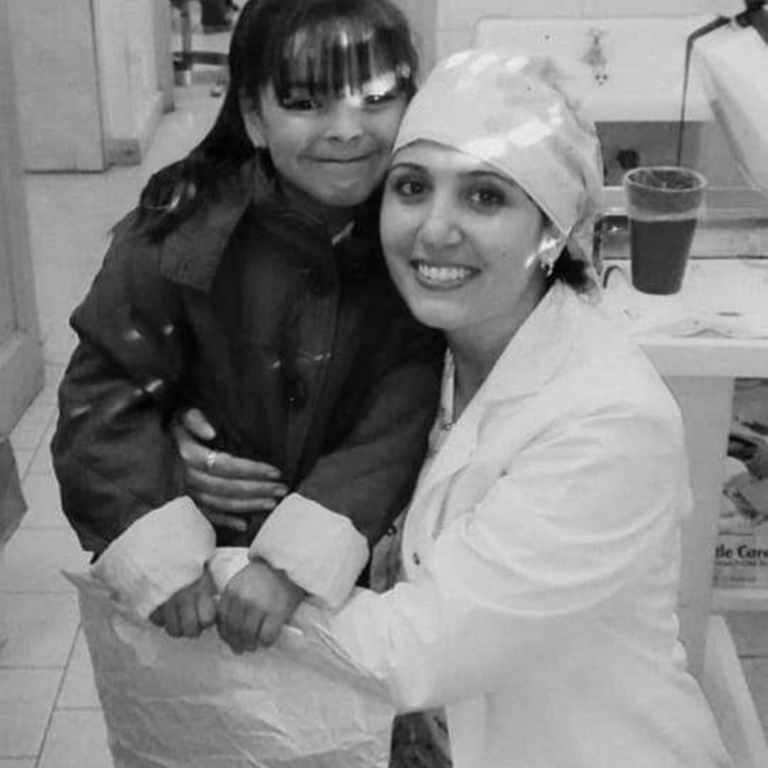
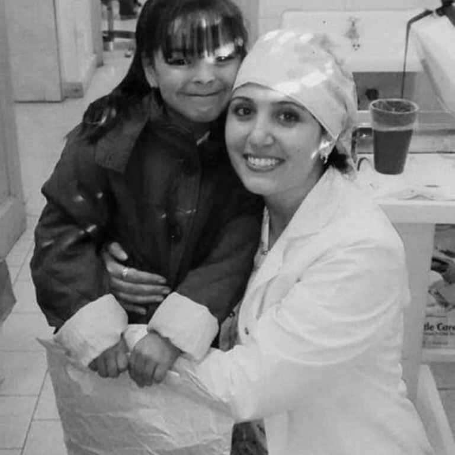

Salud
Consideramos que la salud es un eje integral para todos los proyectos y acciones que se implementan en la Fundación. Con este objetivo siempre presente, realizamos acciones de cuidados integrales tales como prevención y promoción de la salud para un desarrollo saludable e integral de las personas.
CIRCUITO SALUD
Articulamos con el Hospital Tránsito Cáceres de Allende para facilitar el acceso a la salud. De esta forma, brindando asistencia a las familias que forman parte de los distintos proyectos de la Fundación, por medio de circuitos integrados controles ginecológicos, mamarios, análisis citológicos completos entre otros. En conjunto con egresadxs de la Facultad De Odontologia de la Universidad Nacional de Cordoba realizamos prevención y promoción, seguimientos y asistencia de manera integral y gratuita a personas en situación de vulnerabilidad hasta lograr el alta definitiva de lxs pacientes.

En conjunto con el Ministerio de Salud de la Provincia de Córdoba realizamos campañas de vacunación semestrales abiertas a toda la comunidad. Más de 600 personas adultxs mayores, niñxs y adolescentes han completado su carné de vacunación En conjunto con el Ministerio de Desarrollo social Provincial otorgamos en el marco del programa más leches más proteínas, leches para las familias de niñxs que asisten a sala.
 
